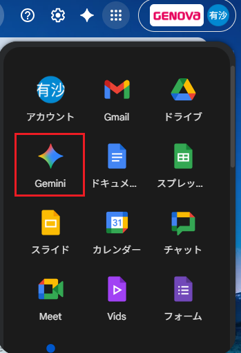

|
【MTG内容共有】
★2025/11/5★
①ロール紙の注文履歴
ロール紙の注文がWEBになり、注文できてますか？と質問があった際は、受注内容のSS見て確認お願いします。
お客様から注文した履歴が見たい。と言われたら、申し込みに自動返信メールが届くので、確認するように伝えてください。（※迷惑メールも確認してください。）
②Chat GPTの有償プランについて
添付PDF見本：チャットGPT申請見本
・予算（472）
・16日前後に経費申請を各自行う。
追記：有償プランですが、12月に正式発表となりますが、有償使用してる方は解約となるそうです！！
グーグルのGeminiのPro契約してるので今後そちらを使用してください！とのことでした。よろしくお願いします。

③メールの問い合わせ・お問い合わせフォームに関して
稲福さんが作成してくれた受電のSSに入力してください。
A～D列・内容はL列 その他は入力しなくて大丈夫です。
サポセンでクローズする案件は入力不要です。
目的：振り分けた先の対応漏れ防止
④活動履歴について
お問い合わせフォーム・SSL・メール対応・フォローメールに関して活動履歴を入力してますが、開始・終了日時に関しては、問い合わせが来た日時の入力を忘れないでください！
⑤2,200円の運用保守について
運用保守が入ってることがわからず対応してしまった等があると思うので、追加制作に下記のように39件入力したいと思います。
事例：https://genova.my.salesforce.com/a0BRB00000bKsF3
8人で振り分けますので、本日中に振り分けの共有をします。
この方法以外に、何か案があれば昼礼時に意見ほしいです。
月末に件数が増えてないか確認して、増えていたら入力する担当を1名決めたいです。
⑥SSとSFの連携のアクセス権が制限されてるので、本日板橋さんがまとめて情シス申請をします。
⑦面談は、毎月10日までに全員終わらせる。スマートHRも10日まで。
⑧リスティング広告受注した案件で、他社のHPへのGoogle tag manager実装を依頼された場合、
AIのバナーのように、書類巻いて費用いただいて対応できるかどうかサーバー課に確認予定となります。（※昨日CP部から質問があったため。）
⑨報告が必要なタスクに関しては、全部期日を決めましょう。
・放置・納品フォロメは、パワポにまとめて数字報告
・サーバー勉強会
Slack アプリで開く
|